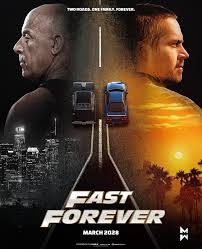

Fast Forever Set to Arrive in 2028 as Fast & Furious Saga Nears Its End
Entertainment | Movies
Published: Tuesday, August 18, 2026

The Fast & Furious franchise is officially getting back on the road.
Universal Pictures has announced that the next installment, titled Fast Forever, will hit theaters on March 17, 2028. The movie is expected to serve as the next chapter following the cliffhanger ending of Fast X and could mark the conclusion of the main saga.
Vin Diesel, who stars as Dominic Toretto and serves as one of the franchise’s producers, confirmed the release news on social media. Alongside the announcement, Diesel shared a throwback image featuring himself and the late Paul Walker, who portrayed Brian O’Conner throughout much of the series.
Diesel reflected on the franchise’s long journey, emphasizing the importance of the movies and the legacy they have created over more than two decades.
The announcement comes after a lengthy period of uncertainty surrounding the project. The follow-up to Fast X was originally expected much sooner, but disagreements involving the story, production costs and scheduling pushed the movie back several years.
A Long-Awaited Sequel
Fast X, released in 2023, ended with Dominic Toretto and his son, Little Brian, facing what appeared to be a deadly trap orchestrated by Dante Reyes, played by Jason Momoa. The movie concluded before revealing the characters’ fate, leaving audiences waiting for the continuation.
The film’s post-credit scenes also raised the stakes by bringing back major characters, including Dwayne Johnson’s Luke Hobbs and Gal Gadot’s Gisele.
The returning cast is expected to include several familiar faces, with Michelle Rodriguez, Tyrese Gibson, Ludacris, Jordana Brewster, Nathalie Emmanuel, Sung Kang and Jason Statham among the franchise veterans connected to the story.
Louis Leterrier, who directed Fast X, is set to return behind the camera. The screenplay has been developed by writers Christina Hodson and Oren Uziel.
The Franchise Is Going Back to Its Roots
One of the biggest priorities for the upcoming movie appears to be reconnecting the series with its Los Angeles origins.
Over the years, the franchise has transformed from a relatively grounded story about street racers into a massive action series involving international espionage, military operations and increasingly extreme stunts.
Diesel has previously discussed wanting the finale to return to Los Angeles and put a greater emphasis on the car culture and street-racing elements that helped establish the franchise.
Another major storyline involves Brian O’Conner. Because Paul Walker died in 2013, the character’s potential involvement raises questions about how filmmakers could bring Brian back without Walker physically appearing in the movie.
The Rock Could Return
Dwayne Johnson’s Luke Hobbs is another major piece of the puzzle.
Johnson and Diesel famously had a highly publicized disagreement during the production of earlier Fast & Furious movies. However, the relationship between the two stars appeared to improve in recent years.
Johnson returned as Hobbs in a post-credit sequence for Fast X, suggesting that the character could play a much larger role in the next film.
The potential reunion between Hobbs and Dom could become one of the major attractions of Fast Forever.
A Massive Franchise Comes Full Circle
Since The Fast and the Furious debuted in 2001, the series has become one of Universal’s biggest movie properties. The franchise has generated billions of dollars worldwide and expanded beyond the main films with Hobbs & Shaw, animated projects and numerous other forms of merchandise and entertainment.
While Furious 7 remains the franchise’s biggest worldwide box-office performer, Fast X still earned more than $700 million globally despite receiving a more mixed response than some of its predecessors.
Now, after years of delays and speculation, fans finally have a confirmed date for the next chapter.
Fast Forever is scheduled to race into theaters on March 17, 2028.
Whether it truly represents the final ride for Dominic Toretto and his family remains to be seen, but after more than 25 years, the franchise appears to be preparing for its biggest farewell yet.